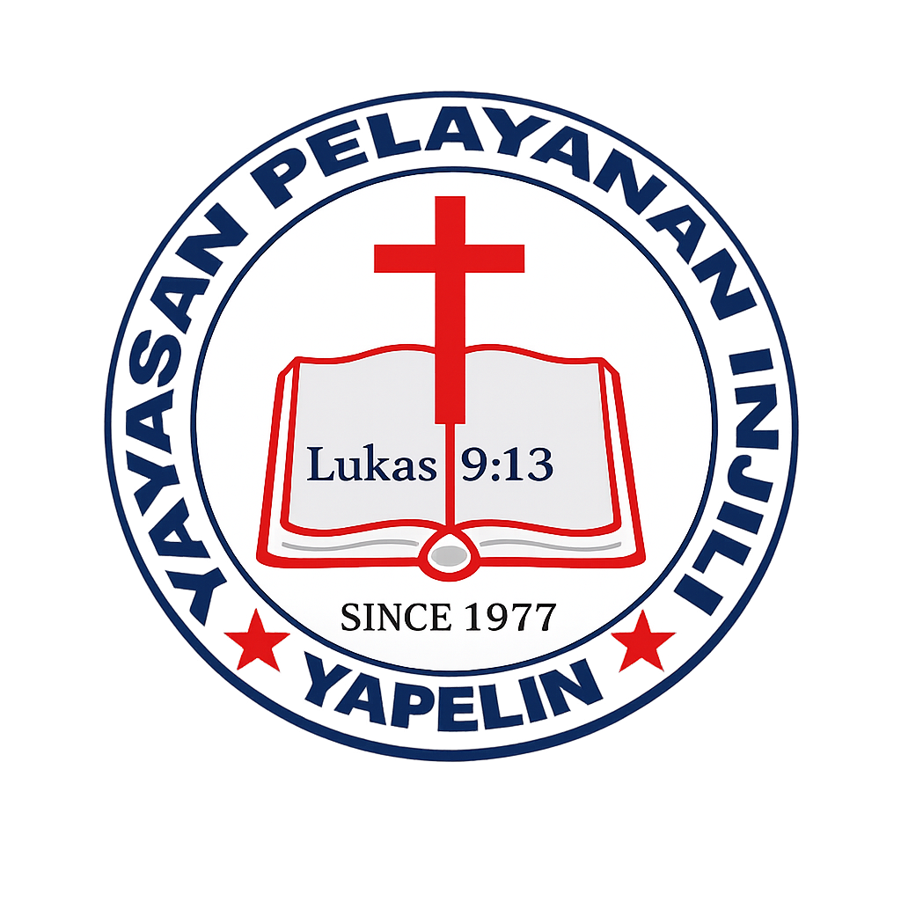
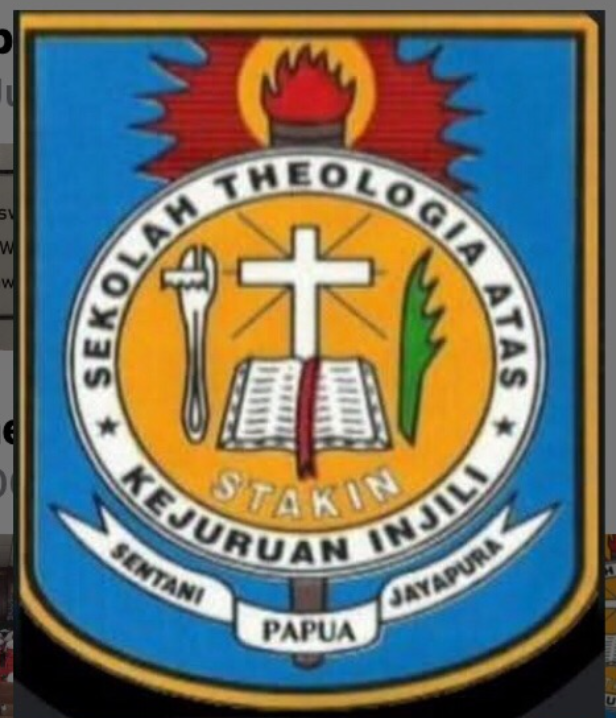
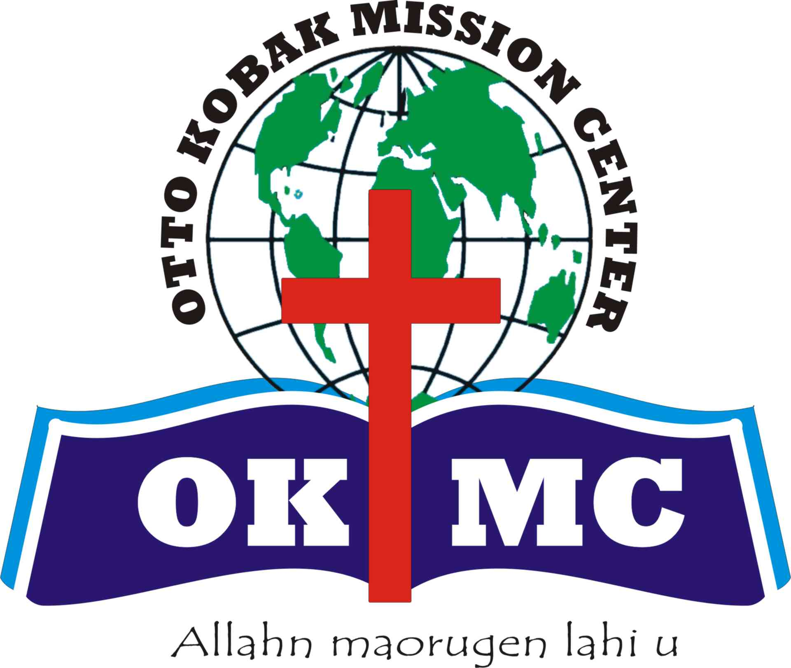

Selamat datang...
GIDI Mission Aviation
Merupakan wujud kemandirian Gereja Injili di Indonesia di bidang penerbangan dalam mendukung pelayanan misi Gereja.

Merupakan wujud kemandirian Gereja Injili di Indonesia di bidang penerbangan dalam mendukung pelayanan misi Gereja.
PT. Sayap Kasih Injili
"Tetapi kamu akan menerima kuasa, kalau Roh Kudus turun ke atas kamu, dan kamu akan menjadi saksi-Ku di Yerusalem dan di seluruh Yudea dan Samaria dan sampai ke ujung bumi." (TB)
Menembus awan, menjangkau jiwa-jiwa: Sayap Kasih Papua Bagi Bangsa-Bangsa.
Mendukung kerja-kerja Missionaris ke ladang misi (terjemahan alkitab, tenaga guru, tenaga medis, dan pengembangan masyarakat lokal).
Dukungan pelayanan dan kunjungan pastoral bagi gereja-gereja ke ladang misi.
Evakuasi medis darurat bagi seluruh masyarakat yang membutuhkan pertolongan transportasi udara.
Pengiriman logistik barang dan jasa untuk pelayanan di berbagai daerah.
Saling mendukung antar lembaga penerbangan misi guna menjunjung tinggi nilai-nilai kekristenan.

"Dalam rangka mendukung penuntasan amanat penginjilan—baik di dalam maupun di luar negeri—GIDI berkomitmen penuh untuk mengadakan armada pesawat terbang mandiri guna mengakselerasi serta menunjang seluruh efektivitas pelayanan misi secara optimal."
"Gereja Injili Di Indonesia adalah gereja yang besar di Indonesia. Dari segala sisi kita sudah siap. Dari sisi lapangan terbang GIDI sudah siapkan, juga orang yang bawa pesawat (pilot—Red.). Yang belum disiapkan adalah badan pesawatnya. Sehingga saya sangat yakin bersama dengan 8 Wilayah dan para kader Gereja GIDI, kita bisa membeli pesawat terbang sendiri untuk mendukung Penginjilan."
Pdt. Usman Kobak, S.Th, MA.
Presiden Gereja Injili Di Indonesia (GIDI)

Pdt. Usman Kobak, S.Th, MA.
Presiden GIDI
Kombinasi antara kondisi geografis ekstrem—lapangan terbang yang pendek, tanah tidak rata, cuaca yang cepat berubah, dan elevasi tinggi—membuat pesawat ini menjadi pilihan utama yang sulit tergantikan.
Berbagai pilihan nominal yang bisa disumbangkan.
Pilihan yang tepat untuk dukungan personal atau individu yang rindu berkontribusi langsung.
Paket bersama yang ideal untuk kelompok persekutuan, komunitas, atau keluarga.
Sangat sesuai bagi lembaga, organisasi, atau sektor bisnis.
Berapa pun nominal persembahan kasih sukarela.
Kirim dukungan Anda langsung melalui akun bank resmi tim Aviasi GIDI:
Kirimkan komitmen iman atau bukti konfirmasi donasi Anda untuk mendukung pengadaan armada pesawat misi ini.
Hubungi tim kami untuk konsultasi atau kerja sama lebih lanjut. Berikut informasi kontak yang dapat dihubungi

0812 8947 1246
Capt. Buce Sub

0811 1628 176
Capt. Yotam Pahabol
Hear from the church councils, ministries, and individuals who have stepped up to support the new mission aircraft procurement.
"Waktu, tenaga dan pikiran yang saya sumbangkan hari ini akan bermanfaat bagi generasi yang akan datang. Kami punya tanggung jawab moral untuk berkontribusi dalam pelayanan gereja melalui talenta yang Tuhan kasih kepada kita masing-masing."
Ketua Tim Aviasi GIDI
"Hadirnya penerbangan misi GIDI akan menjadi jembatan kasih dalam menunjang pelayanan misi di Tanah Papua. Kiranya lewat website dan sistem informasi online dapat meningkatkan layanan informasi dan publikasi pelayanan misi tersebut."
Nokensoft.com
"Dengan adanya penerbangan misi ini bisa menunjang kebutuhan tranportasi udara khususnya di Papua dalam menunjang pelayanan misi gereja dan menuju kemandirian ekonomi jemaat. "
Ibu Rumah Tangga
"Adanya penerbangan misi yang dimiliki oleh gereja lokal di Papua, akan menjadi peluang promosi usaha rakyat. Salah satunya seperti usaha di bidang pariwisata."
Trek-Papua.com
Lembaga, yayasan, dan institusi pendidikan Kristen yang bergerak bersama dalam kesatuan tubuh Kristus untuk menyukseskan pelayanan aviasi misi di Tanah Papua.
Gereja Injili di Indonesia

Yayasan Pelayanan Injili
Sekolah Tinggi Teologi Gereja Injili di Indonesia

Sekolah Teologi Atas Injili

Otto Kobak Mission Center
Yayasan Sosial Untuk Masyarakat Terpencil